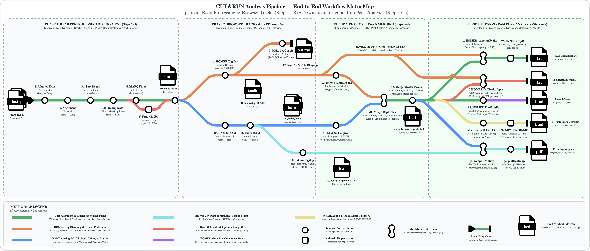

Trimmomatic → Bowtie2 → Picard Dedup → samtools MAPQ ≥ 10 filter.06_index_bam/), HOMER TagDirs & UCSC bedGraphs (07_homer/), and BigWigs (08_bigwig/).MACS2 (from BAMs) and/or HOMER (from TagDirs).≥2) and builds an inclusive union <target>_master_peaks.bed.deepTools tornado heatmaps, HOMER/MEME motif discovery, and 5 automated QC plot suites.Cut_And_Run_Analysis)
Dropbox Input Subfolder (${params.input_dir}) |
Config Parameter / Glob | File Contents | Downstream Steps Fed |
|---|---|---|---|
06_index_bam/ |
input_bam = ".../06_index_bam/*.bam" |
Deduplicated, MAPQ-filtered .bam + .bam.bai |
Step c1: MACS2_CALLPEAK |
07_homer/tag_dir/ |
input_tagdirs = ".../07_homer/tag_dir/*" |
Sample HOMER Tag Directories (<sample_id>/) |
Steps c2, e, f: HOMER FindPeaks, AnnotatePeaks, DiffPeaks |
08_bigwig/{deepTools,UCSC}/ |
bigwig_source = "deepTools" (or "UCSC") |
RPKM (deepTools) or UCSC (bedGraphToBigWig) .bw |
Step g: DEEPTOOLS_METAPEAK tornado heatmaps |
MACS2_CALLPEAK)run_macs2_callpeak = truemacs2 callpeak -t <id>.bam -f BAMPE -g ce -q 0.01macs2_broad = true for spreading histone domains (e.g., H3K27me3) or false for sharp marks (H3K4me3, TFs).09_peaks/macs2/<id>_peaks.narrowPeak, _peaks.xls, _summits.bedHOMER_FINDPEAKS)run_homer_findpeaks = truefindPeaks <tagdir> -style factor -o <id>_peaks.txt && pos2bed.plhomer_peak_style = "factor" or "histone".09_peaks/homer/<id>_peaks.txt & <id>_peaks.bedBEDTOOLS_MERGE_REPLICATES)run_merge_replicate_peaks = true (uses active_peak_caller = "macs2" or "homer")condition, merges overlapping coordinates via bedtools sort | bedtools merge -c 4 -o count_distinct, and retains intervals present in ≥ min_replicate_overlap replicates (default 2).10_merged_peaks/replicates/<condition>_replicated_peaks.bedBEDTOOLS_MERGE_MASTER)run_merge_master_peaks = trueIgG controls, groups condition peaks by target (e.g., all H3K4me3 conditions together, all H3K27me3 conditions together), and merges into an inclusive master coordinate list.10_merged_peaks/master/<target>_master_peaks.bedHOMER_ANNOTATEPEAKS)run_homer_annotatepeaks = true | Combines <target>_master_peaks.bed + all target Tag Directories (07_homer/tag_dir/*).annotatePeaks.pl <target>_master_peaks.bed ce11 -size given -cpu 4 -d <sample1_tagdir> <sample2_tagdir> ... > <target>_annotated_peaks.txt11_peak_quantification/<target>_annotated_peaks.txt:
Nearest gene name & description, Distance to TSS, genomic feature class (Promoter-TSS, Exon, Intron, Intergenic), and depth-normalized tag counts (reads per 10M) for every sample across the exact width of each master peak (-size given).
bin/normalize_homer_peaks.py to append length-normalized *_per_kb columns when comparing peaks of different widths.HOMER_GETDIFFERENTIALPEAKS)run_homer_diffpeaks = trueparams.diff_contrasts):
Pairs treatment vs. background conditions per target (e.g., EV_INT_H3K4me3 vs. N2_H3K4me3).
getDifferentialPeaksReplicates.pl -t <treat_tagdirs> -b <bg_tagdirs> -p <target>_master_peaks.bed -genome ce11 -all
12_differential_peaks/<contrast_id>_differential_peaks.txtDEEPTOOLS_METAPEAK)run_deeptools_metapeak = true08_bigwig/deepTools/*.bw (RPKM) or 08_bigwig/UCSC/*.bw via params.bigwig_source.computeMatrix reference-point): Aligns all target BigWig tracks on <target>_master_peaks.bed centers (--referencePoint center -b 2000 -a 2000).plotHeatmap): Renders top summary profile curves and bottom per-peak sorted heatmaps (--colorMap inferno).13_metapeak_plots/<target>_metapeak_heatmap.pdf & _matrix.mat.gzHOMER_FINDMOTIFSGENOME)run_homer_findmotifs = truefindMotifsGenome.pl <target>_master_peaks.bed ce11 <outdir> -size 10014_motifs/homer/<target>_homer_motifs/ containing interactive web reports for known TF motifs (knownResults.html) and de novo motifs (homerResults.html).MEME_STREME)run_meme_streme = trueawk) → expands ±50 bp windows (bedtools slop -l 50 -r 49) → extracts FASTA (bed2fasta) → runs streme --nmotifs 20 --dna.14_motifs/meme_streme/<target>_streme_motifs/streme.htmlrun_summary_plots = true → 15_summary_plots/)01_peak_counts/ (PLOT_PEAK_COUNTS): Bar chart of per-sample MACS2/HOMER peaks, replicate-filtered peaks, and master union peak totals.02_genomic_features/ (PLOT_ANNOTATED_SUMMARY): Stacked bar chart, donut chart, and TSS distance histogram (Promoter-TSS, Exon, Intron, Intergenic).03_correlation_and_pca/ (PLOT_ANNOTATED_SUMMARY): Sample-to-sample Pearson correlation heatmap and PCA scatter plot on log2(Tag Count + 1).04_signal_distributions/ (PLOT_ANNOTATED_SUMMARY): Violin/boxplots of raw tag counts vs. width-normalized density (tags/kb) and peak width histograms.05_differential_plots/ (PLOT_DIFFERENTIAL_VOLCANO_MA): Volcano (−log10FDR vs. log2FC) and MA plots with automated top differential gene labels.Analysis_Run/# 1. Configure Analysis_Run/config/experiment.config (experiment = "cut_run103026A", bigwig_source = "deepTools")
# 2. Launch pipeline (automatically mounts Dropbox & resumes cached tasks):
cd Analysis_Run && ./run.sh